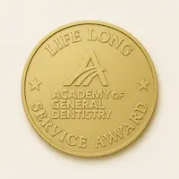
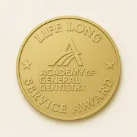

Meet Dr. Stacy Doyle Lind
D.M.D., M.A., M.P.H., M.B.A., M.A.G.D.
Dr. Lind is a highly respected and internationally recognized dentist, lecturer, and educator with over 30 years of clinical experience. His passion for dentistry is matched only by his dedication to lifelong learning. Over the years, he has earned multiple advanced degrees and fellowships and lectured in over 98 countries and 162 dental schools. He has served as faculty in numerous institutions and helped guide dental professionals globally.
In addition to his professional achievements, Dr. Lind is transitioning into dental consulting, mentoring, and product research for implantology and oral devices.
Beyond the Practice
Dr. Lind is a master beekeeper, gardener, snow skier, scuba diver, and nature enthusiast. He was on ski patrol during high school in Colorado and now enjoys traveling and adventuring with his wife and two daughters.
His wife, Kristin, has supported him from the start—managing their practices and co-teaching at hands-on events. She currently owns a private travel agency and is studying Software Development.
Their eldest daughter is in nursing school at Grand Canyon University, with a BS in Neuroscience and an MBA in Healthcare Administration. She is also a graduate of the Park City Culinary Institute. Their youngest is starting middle school and enjoys art, crafting, climbing, and exploring nature.
Credentials & Achievements
Dr. Lind has earned top honors in dentistry, including the L.L.S.R. (AGD's highest service award), multiple advanced degrees (including an MPH, MBA, and two M.A.s), and certifications from elite institutions like Hebrew University, the Kois Center, the Misch Institute, and SayBrook University.
He has also served as a clinical instructor, lecturer for the ADA Success Program, and consultant for companies like Ultradent, Nobel Biocare, and Biolase.
 
